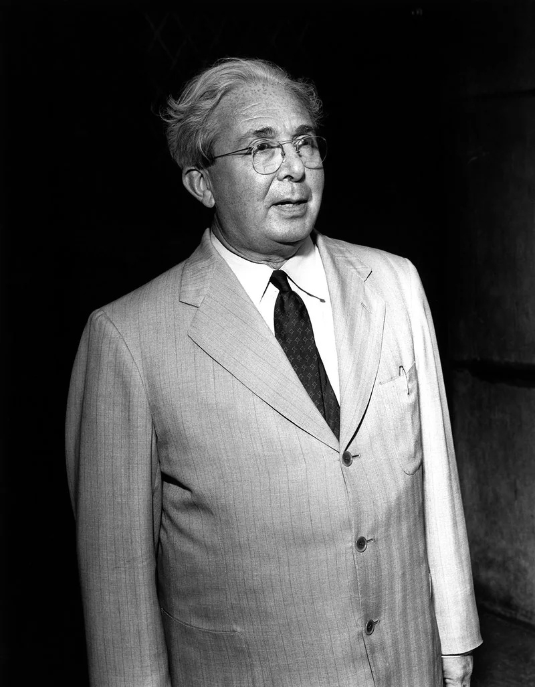
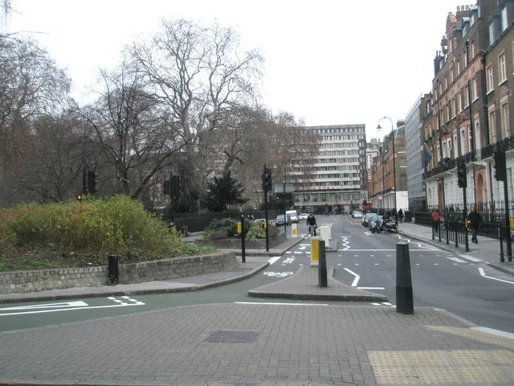
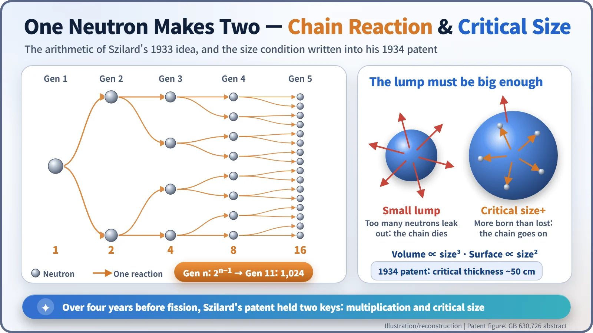
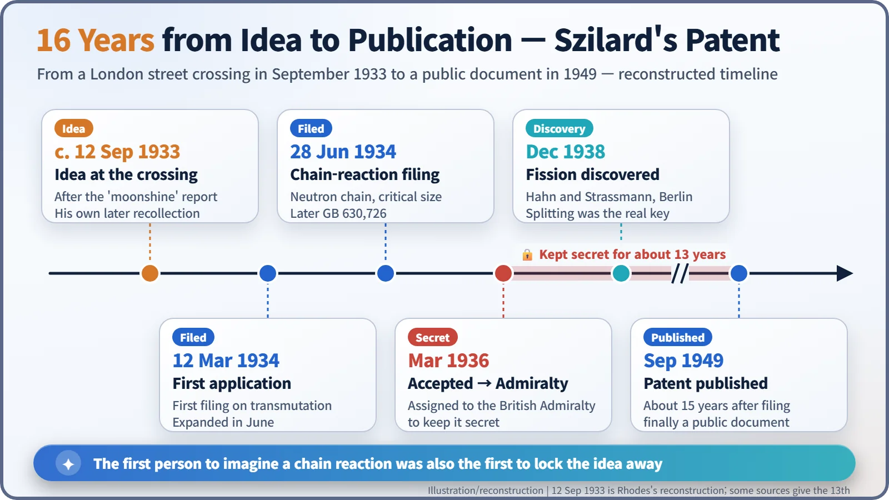

Nuclear History · 051
"Moonshine," Said Rutherford — Leo Szilard's Chain-Reaction Idea and His Secret Patent (1933–1936)
Provoked by Rutherford's dismissal of atomic power, a refugee physicist imagined the chain reaction five years before fission, then locked his own idea away.
In September 1933, the day after The Times reported Ernest Rutherford calling atomic power "moonshine", the refugee physicist Leo Szilard imagined a neutron chain reaction while crossing a London street. In 1934 he patented the idea, including the notion of a critical size, and in 1936 he assigned the patent to the British Admiralty to keep it secret. It was not published until 1949, years after fission had made the idea real.
"Talking moonshine"
"Anyone who looked for a source of power in the transformation of the atoms was talking moonshine." That was the gist of a report in The Times of London on the morning of 12 September 1933. The paper was summarising a lecture that Ernest Rutherford (1871–1937), the leading nuclear physicist of the day, had given the evening before at the annual meeting of the British Association for the Advancement of Science in Leicester. The message was plain: forget about atomic power stations. [3]
One reader took it as a challenge. He was Leo Szilard (Leó Szilárd, 1898–1964), a Hungarian-born physicist who had fled Nazi Germany earlier that year and was living out of London hotel rooms.

Why the great man said "moonshine"
Rutherford had his reasons. In 1933 the "bullets" used to break into atomic nuclei were mostly protons and alpha particles. Both carry positive charge, and so does the nucleus, so the bullets are pushed away. Nearly every shot misses; only a rare one hits and releases a little energy. You put far more energy in than you get out, so power generation looked hopeless. [7]
But a year earlier, in 1932, James Chadwick had discovered the neutron, a particle with no electric charge. It is not repelled by the nucleus and can slip straight in. A new kind of bullet was now on the table.
The moment the light turned green
Szilard was staying at a hotel near Russell Square in Bloomsbury at the time, according to his biographers. Years later he described what happened next. Waiting for the traffic light to change on Southampton Row, he stepped off the kerb as it turned green, and an idea struck him. In his own later words, it occurred to him:
"…that if we could find an element which is split by neutrons and which would emit two neutrons when it absorbs one neutron, such an element, if assembled in sufficiently large mass, could sustain a nuclear chain reaction."
A word of caution is in order. The scene comes from Szilard's own recollection, recorded roughly three decades after the event. The date usually quoted, 12 September, is the historian Richard Rhodes's reconstruction in The Making of the Atomic Bomb (1986); some sources give the 13th. Atmospheric touches such as the grey, irritable morning are Rhodes's literary embellishments. What is solid is the frame: London, September 1933, right after the Rutherford report. [2] [3]

When one becomes two
Why was this such a big idea? Think of a chain letter. One person sends it to two, each of them sends it to two more, and the numbers run 1, 2, 4, 8, 16… By the eleventh round, 1,024 people have it. Neutrons can behave the same way. If one reaction releases two neutrons, and each of those triggers another reaction, the count snowballs. You no longer need to keep firing bullets from outside, because each reaction supplies the next bullets itself. That is a direct answer to Rutherford's problem of wasted shots.
Szilard added a condition: the material must be gathered in a "sufficiently large mass." Some neutrons escape through the surface of a lump before they can do anything. As a lump grows, its volume rises with the cube of its size but its surface only with the square, so a bigger lump loses a smaller share of its neutrons. The threshold at which the chain just keeps itself going is what reactor designers still call critical.

A patent, then a padlock
Szilard put the idea on paper. On 12 March 1934 he filed his first patent application, on the transmutation of elements, and on 28 June 1934 he filed another that set out a neutron chain reaction and the critical condition. That filing became British patent GB 630,726. Its abstract states that "a neutron chain reaction generates power and produces radio-active isotopes," and gives a critical thickness for a self-sustaining chain reaction "of the order of 50 cms." [1] [5]
This does not mean Szilard foresaw fission. Uranium appears in the patent's list of possible materials, alongside indium, beryllium and bromine, but what he was looking for was a nucleus that would swallow one neutron and spit out two, not one that would split apart. Beryllium was his favourite candidate, and experiments with it failed. In 1936 he tried indium. Again, no chain reaction. [4]
What he did next is the striking part. When the British Patent Office accepted the patent in March 1936, Szilard assigned it to the British Admiralty so that it could be kept secret. He feared that knowledge with military uses might reach Nazi Germany first. A novel also hung over his thinking: H. G. Wells's The World Set Free (1914), which imagined "atomic bombs" destroying cities. Szilard read it in 1932 and later recalled that it made "a very great impression" on him. [4] [6]

The idea came before the facts
The patent was not published until 1949. In the meantime, in December 1938, fission was discovered in Berlin, and within months it was confirmed that each fission releases two or three neutrons. The element Szilard had been hunting for, one that takes in one neutron and gives out more, had finally turned up. Today we know that uranium-235 releases about 2.4 neutrons per fission on average. Szilard, who had moved to the United States in 1938, would soon be urging fellow physicists not to publish their fission results.
The idea of a chain reaction was born about five years before fission itself. And the first person to imagine it was also the first to worry about where it might lead, and to lock it away. In a sense, Rutherford's "moonshine" lit the fuse.